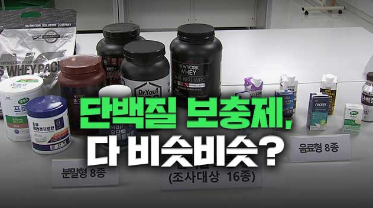

PT는 어떻게 여러분을 도울 수 있을까요?
PT는 이렇게
만들어졌습니다.
만들어졌습니다.


헬스 열풍과 함께 시작된
단백질 보충제 열풍,
성인 10명 중 9명은
불분명한 출처를 통해 프로틴을 구매하고,
그 중 1명은 잘못된 섭취방법을 통해
신체 주요 장기에 해를 입고 있다는 사실을
알고 계셨나요?
단백질 보충제 열풍,
성인 10명 중 9명은
불분명한 출처를 통해 프로틴을 구매하고,
그 중 1명은 잘못된 섭취방법을 통해
신체 주요 장기에 해를 입고 있다는 사실을
알고 계셨나요?

저희는 단백질 보충제에 대한
전문적 정보를 구하기 어려운
운동 초보자 또는 보편적 소비자를
PT 서비스의 'Trier'로 초대합니다.
Trier 분들은 각자의 신체 목표를 가지고
식이 특징, 신체 질환, 신체정보를 통해
본인에게 꼭 맞는 프로틴을 추천받고,
그에 따른 솔루션 역시 제공받습니다.
전문적 정보를 구하기 어려운
운동 초보자 또는 보편적 소비자를
PT 서비스의 'Trier'로 초대합니다.
Trier 분들은 각자의 신체 목표를 가지고
식이 특징, 신체 질환, 신체정보를 통해
본인에게 꼭 맞는 프로틴을 추천받고,
그에 따른 솔루션 역시 제공받습니다.